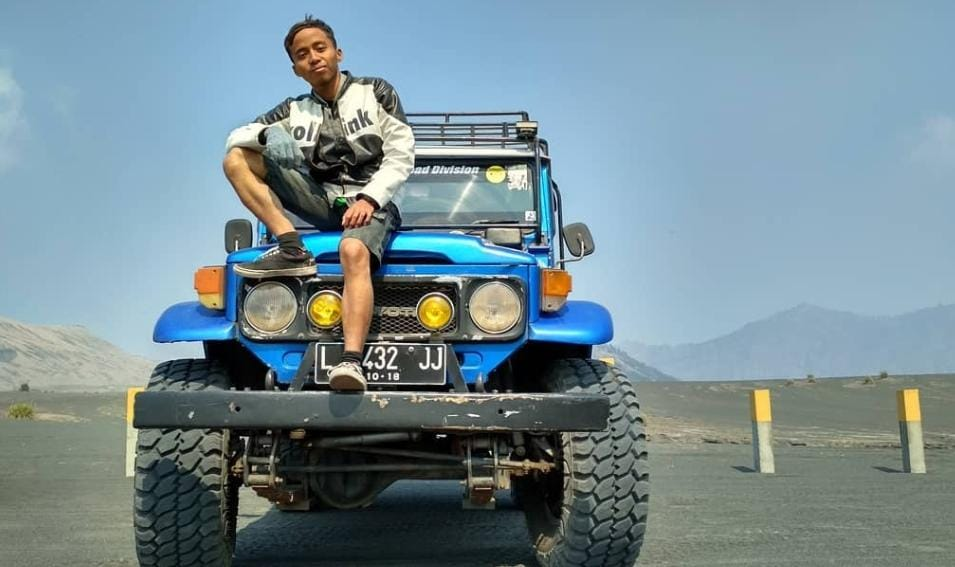

Entrepreneur & Educator
Perjalanan saya dalam dunia kewirausahaan dimulai sejak masa sekolah menengah, ketika telepon pintar Android mulai berkembang pesat di daerah saya. Melihat peluang tersebut, saya memulai usaha jual beli telepon genggam yang menjadi pengalaman awal dalam memahami dunia bisnis dan pelayanan pelanggan.
Saat menempuh pendidikan di perguruan tinggi, saya terus mengembangkan jiwa wirausaha dengan merintis usaha di bidang travel dan transportasi. Di sisi lain, saya juga aktif sebagai Pembina Pramuka dan organisasi kampus baik eksternal maupun internal, yang memberikan pengalaman berharga dalam membangun karakter, kepemimpinan, dan kerja sama tim.
Setelah menyelesaikan pendidikan tinggi, saya berhasil meraih gelar sarjana dan mengabdikan diri sebagai seorang guru. Bagi saya, pendidikan dan kewirausahaan merupakan dua bidang yang saling melengkapi dalam menciptakan manfaat bagi masyarakat. Melalui pengalaman tersebut, saya terus berkomitmen untuk berkembang, berbagi ilmu, dan memberikan kontribusi positif bagi lingkungan sekitar.
Saya percaya bahwa setiap orang memiliki potensi luar biasa. Dan saya percaya Pendidikan bukan hanya tentang pengetahuan, tetapi tentang membangun karakter dan masa depan.
"Saya percaya bahwa kesuksesan tidak hanya diukur dari pencapaian pribadi, tetapi juga dari seberapa besar manfaat yang dapat diberikan kepada orang lain melalui pendidikan, pelayanan, dan karya yang berkelanjutan."
Awal masuk kuliah dan memulai usaha dibidang travel dan carter mobil.
Menyelesaikan studi S1 Informatika.
Awal mula terjun di dunia pendidikan dan memulai karier sebagai pendidik.
Membangun personal branding sebagai edukator & entrepreneur, sekaligus membangun sebuah usaha digital.
Saya terbuka untuk kerja sama dalam bidang pendidikan, bisnis, dan pelatihan.
Mulai Percakapan